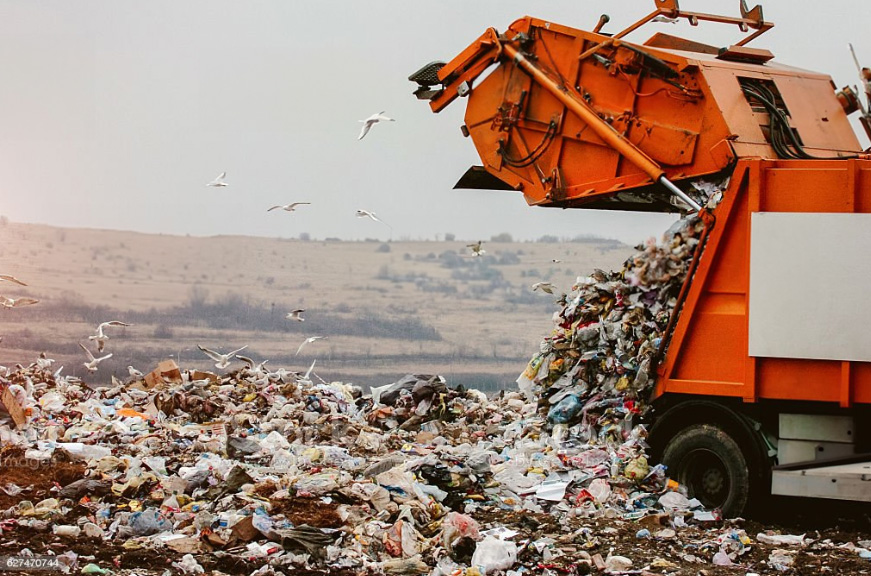

As regiões norte e sul do país são, entre os anos 2018 a 2020, as que mostram uma queda no que diz respeito à reciclagem e à gestão dos resíduos urbanos. As regiões do centro do país apresentam alguns desequilíbrios. Ainda assim, são os distritos que apresentam um maior cuidado na valorização orgânica.
Ao analisar os dados recolhidos no Pordata, uma base de dados com estatísticas oficiais e certificadas sobre o país e a Europa, entre os anos 2018 a 2020, em todos os distritos de Portugal, as regiões do Norte e Sul apresentam uma maior taxa de desvalorização no que à reciclagem e gestão de resíduos diz respeito. Vila Real, apresenta uma percentagem de -85% e, de seguida, Viana do Castelo com cerca de -78%. Na zona do litoral, Lisboa e Setúbal variam entre os -60%. Porto e Beja, com níveis percentuais entre os -48% e -57%. Na região Centro, apenas Viseu se destaca pela elevada discrepância em relação aos restantes concelhos da região, com cerca de -72%. Sendo os distritos considerados com uma menor taxa de reciclagem, gestão de resíduos e hierarquia na gestão do lixo urbano.
Em relação aos distritos que, por sua vez, se encontram a meio da tabela percentual de uma taxa média de valorização dos resíduos, na região Sul, Évora com -26% e Portalegre com -15%. Na região Centro, Leiria, Guarda e Castelo Branco que variam entre -6% e -21%. No topo da tabela os distritos de Coimbra com 9%, Bragança com 15%, Aveiro com 20% e Santarém com 21%. Considerados, assim, os distritos com maior taxa de reciclagem, gestão de resíduos e hierarquia na gestão do lixo urbano. Segundo o “Notícias ao Minuto” Virginijus Sinkevičius, Comissário Europeu para os Assuntos Marítimos e as Pescas, deixa um aleta a Portugal para o que o país consiga ter a capacidade de reciclar e ter um maior cuidado na valorização orgânica.“Aconselho a fazer tudo o possível para aumentar esta capacidade de reciclagem. Vejo que são necessários mais esforços para melhorar a gestão dos resíduos e tirar maior partido da circularidade.”
A Produção e Gestão de Resíduos Urbanos diz respeito à evolução da produção destes resíduos e à responsabilidade dos seus utilizadores. É consequentemente utilizada devido a atividades socioeconómicas utilizadas no dia a dia até ao momento em que deixam de ter utilidade para o consumidor e, desta forma, os materiais que podem ser reutilizados, extraí-los de forma correta e, aqueles que não se encontram em bom estado, são levados à sua decomposição total. No gráfico acima apresentado, entre os anos 2018 a 2020, apesar da pouca diferença, a gestão das matérias tem vindo a aumentar.
A reciclagem dos resíduos, para além de ser um fator importante para a economia circular, é consequentemente uma boa prática para o meio ambiente. Desta forma, o maior número de taxas de reciclagem poderá ter um aumento significativo no país. Para isso, há uma hierarquia a seguir que é gerida por vários fatores, entre a prevenção e redução, reciclagem, preparação para a reutilização e, por fim, exclusão, quando os resíduos não podem, ou não estão em condições de serem reaproveitados. Assim, a ponderação utilizada é de extrema importância, uma vez que promove soluções para a reutilização produzida pela matéria prima que, anteriormente, foi utilizada, para que, assim, possa ser reintroduzida na economia circular.
A reciclagem e gestão adequada de resíduos urbanos são estratégias que ajudam a minimizar a quantidade de resíduos destinados a aterros sanitários. A implementação da hierarquia de resíduos e as práticas de gestão destas matérias em decomposição requerem uma consciencialização ativa da sociedade para uma colheita seletiva para que a produção de resíduos seja cada vez menor e, assim, minimizar os impactos negativos no meio ambiente, protegendo, desta forma, os recursos naturais e promover um futuro mais sustentável para futuras gerações.